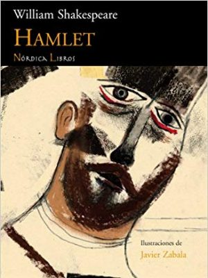
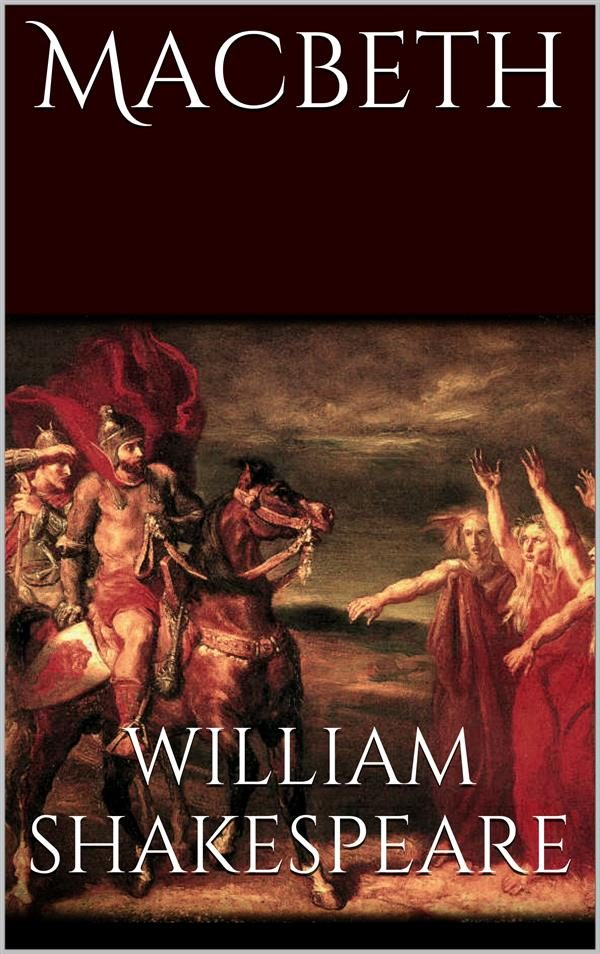
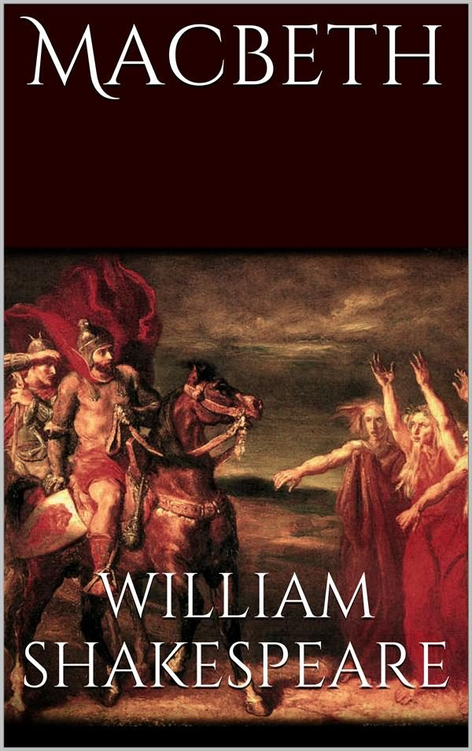
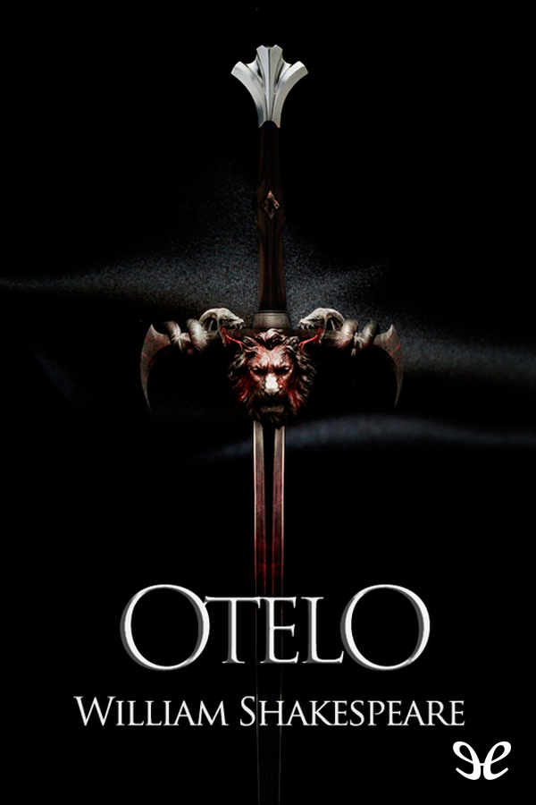
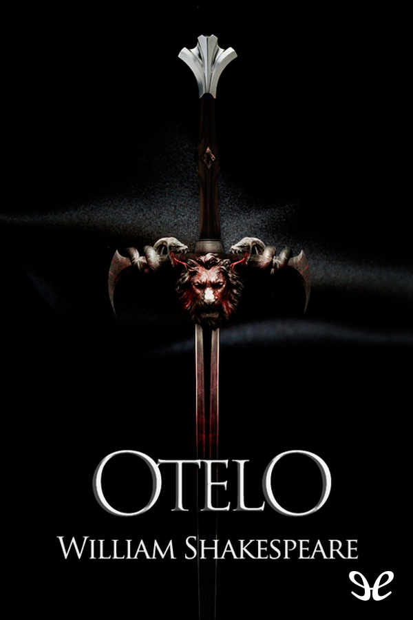
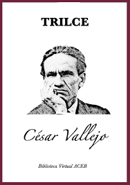
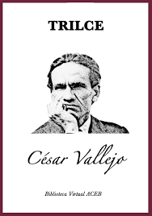

A través de los años, los libros han sido una herramienta eficiente de aprendizaje dentro de sus páginas se esconde información relevante de todo tipo.Disfruta de la variedad de libros y aprendizaje que te brindamos en LITERATURA EN TUS MANOS ,estamos a tu disposición


Autores:
- William Shakespeare-“el Bardo de Avon”
- Victor Hugo
- Edgar Allan Poe
- César Vallejo
- isabel allende
William Shakespeare fue un dramaturgo, poeta y actor inglés. Conocido en ocasiones como el Bardo de Avon, se le considera el escritor más importante en lengua inglesa y uno de los más célebres de la literatura universal. «Shakespeare es generalmente reconocido como el más grande de los escritores de todos los tiempos, figura única en la historia de la literatura.

 

 

Victor Marie Hugo fue un crítico, pintor ,poeta, dramaturgo y novelista romántico francés, considerado como uno de los grandes exponentes del romanticismo y de la literatura francesa en general. Inició su carrera como escritor escribiendo poesía, novelas y obras de teatro.Ocupa un puesto notable en la historia de las letras francesas del siglo xix en una gran variedad de géneros y ámbitos "Fue un poeta lírico".


Edgar Allan Poe fue un escritor, poeta, crítico y periodista romántico estadounidense, generalmente reconocido como uno de los maestros universales del relato corto, del cual fue uno de los primeros practicantes en su país. Fue renovador de la novela gótica, recordado especialmente por sus cuentos de terror.Poe es considerado el padre del cuento de terror psicológico.


César Abraham Vallejo Mendoza fue un poeta y escritor peruano. Es considerado uno de los mayores innovadores de la poesía universal del siglo XX y el máximo exponente de las letras en el Perú. Publicó en Lima sus dos primeros poemarios: Los heraldos negros (1918), con poesías que, si bien en el aspecto formal son todavía de filiación modernista, constituyen a la vez el comienzo de la búsqueda de una diferenciación expresiva; y Trilce (1922), obra que significa ya la creación de un lenguaje poético muy personal, coincidiendo con la irrupción del vanguardismo a nivel mundial.

 



Isabel Angélica Allende Llona (Lima, 2 de agosto de 1942)es una escritora chilena. Desde 2004 es miembro de la Academia Estadounidense de las Artes y las Letras.Obtuvo el Premio Nacional de Literatura de Chile en 2010.Autora superventas, la venta total de sus libros alcanza 73 millones de ejemplares y sus obras han sido traducidas a 42 idiomas.Es considerada como la escritora viva más leída del mundo de la lengua española.